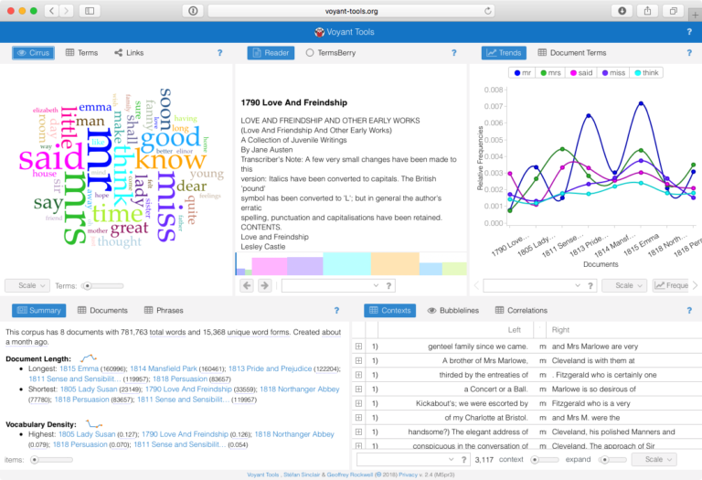
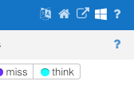
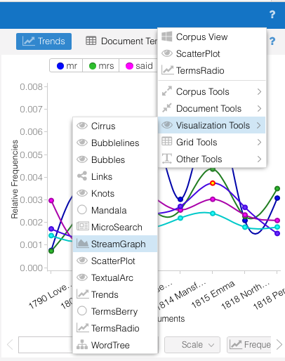
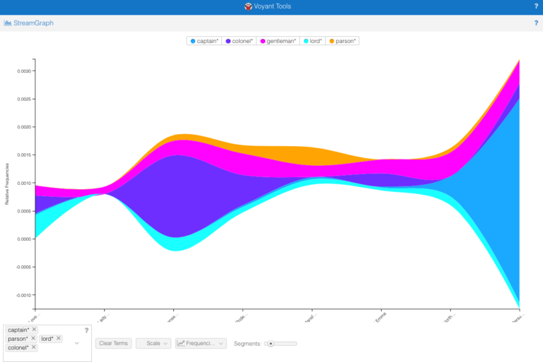
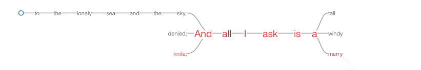

6 Activity: Textual Exploration with Voyant Tools
6.1 What is Voyant Tools?
Voyant Tools has been designed as a web-based text reading and analysis environment. It is a scholarly project created by Stéfan Sinclair and Geoffrey Rockwell which offers visual analysis technics originally aiming at digital humanities students and scholars. Over the last few years Voyant Tools has matured into a sophisticated tool that includes an array of different text visualisations ranging from very standard to extremely experimental. We are going to use Voyant tools to look at some of them.
6.2 What can I do with it?
With Voyant Tools you can both explore a single text document or an entire corpus of text documents. You can easily create single stand-alone visualisations or combine them into multiple interactive views side-by-side. By default, such an interface is shown when a corpus or document is first loaded but there are many ways to tweak and customize it to your liking. And finally, there are options to export a link of your work as an HTML snippet or an image to incorporate in your own webpages and texts.
6.3 How do I start?
Access to Voyant tools is easy. You simply load a text or an entire text corpus on the start page. Voyant tools accepts text in various formats like plain text, HTML, PDF or MS word. You can also load a collection of text using a zip file or a set of URLs. We are going to use an already existing corpus for our first exploration and upload our own text for the second exercise.
6.4 Exercises
6.4.1 Exploring a corpus of documents
Go to Voyant Tools (http://voyant-tools.org)
Click the ‘Open’ button, a dialog should appear. Choose the corpus ‘Austen’s Novels’ and open. Voyant now fetches the corpus and automatically opens the main interface. Under the surface Voyant does a lot of pre-processing for us like removing punctuation, excluding stopwords and building a term-document matrix as a basis for the visualisations.

Voyant offers about 25 different views and by default the interface shows five of them, which can be switched to different views via tabs. On the top left you see a word cloud which in Voyant is called Cirrus (Latin for ‘cloud’) showing the most common terms. This visualisation uses Jason Davies’ D3-based Word Cloud library, which itself is an implementation of Wordle.
Next to Cirrus the Reader view shows the actual text. The Trends view shows the distribution of the top 5 terms over the entire corpus. The Cirrus and Trends views are interactive.
- Try it out: In the word cloud click on names like Elinor, Elizabeth or Emma to find out in which novel these characters are the heroine. Has Jane Austen used these names only once or has she recycled some of them in other books?
- Try it out: Look for the word ‘love’ in the word cloud (or type it into the search box in Trends) and compare the relative and the raw frequency in Terms. Why are the resulting curves so different?
At the bottom left you find a summary of the entire corpus, which consists of eight still highly popular novels written by Jane Austen. You see statistical details on the document length, vocabulary density or average words per sentence.
- Look at distinctive words: These are words that appear only in one novel and are therefore within this corpus typical for this particular novel. What do you think makes these words so unique?
The last view on the bottom right shows terms in context. More specifically it shows a term in the centre as well as the five words before and after the term.
- Try typing your own terms into the search box to look at them in context.
- For fans of the 1995 TV adaptation of ‘Pride and Prejudice’: Can you find the scene where Mr. Darcy (played by Colin Firth) confesses his love to Elizabeth? (Tip: try looking for ‘ardently’, then expand the content by pressing the + sign.)
Beside these first five views Voyant Tools offers about 20 more. You can find a full list and description of tools in the official guide: http://voyant-tools.org/docs/#!/guide/tools. Some of them are easily accessed via tabs, e.g. the Reader View has a TermsBerry view on the second tab. The TermsBerry actually works from a similar angle as Contexts. It uses the proximity of terms to establish connections between them. The outcome is much more playful. By default, the most common terms are shown. When you hover over a term the words that appear most often in its context will be highlighted.
- Try it out: Hover over Marianne and Jane to find the name of their respective sisters. By default, the context is set to the next two words. Try expanding it to five or more.
- Try it out: Change the strategy to see the distinct terms. Hovering over a term gives us the term frequency and, relevant for distinct terms, its TF-IDF score. The formula for TF-IDF is used here to find the terms that have a high frequency in the corpus but mostly occur in one particular document. Like we saw before, within the corpus the words truly unique to one book would be the names of its characters.
- The size of the circles indicates the number of times a term is mentioned. Can you guess at the names of the top five female heroines in the Austen novels?
You can access the full range of views via the question mark on the top right of each view or to create a single visualisation, on the top right of the screen. Hover over it, move to the window and choose a view from the dropdown menu. The views above the lines are the ones Voyant suggests as the most helpful ones. Via the question mark you can also set options like a different stopword list or a specific color palette and font for the word cloud.

Now let’s create a StreamGraph. Stream graphs are usually used for showing occurrences of terms or topics over time (like Twitter streams) but it can also show the distribution over a corpus of novels ordered by their publication years.
Use the question mark on the top right to go to Visualisation Tools / StreamGraph. (You can always go back by clicking
‘Corpus View’).
- Since the most common terms are a bit to general let’s have a look at somewhat more specific terms. Austen’s novels are all set in the world of the British gentry around 1800 and a male character would typically be a gentleman, but some thrived to become something more specific.
- Delete all terms via the
‘Clear terms’button and then enter the term ‘gentleman’ into the search box – you have to type it first and then once loaded choose the term from a dropdown list. - Now add
‘colonel’,‘lord’,‘parson’and‘captain’in the same way. Some terms are evenly distributed, but some professions (or titles) seem to be much more relevant in some novels than in others.
 What about lower professions? Enter
‘sailor’,‘soldier’and‘farmer’. Nah, they really weren’t part of Austen’s world.
Now let’s look at the export options. You can simply export the URL of your visualisation. You can also export an image as a PNG or SVG file or a HTML snippet to include in your own webpage. We’ll try the last one.
- Go to the question mark on the top left corner and then click the export button. Choose
‘Export View’and click‘an HTML snippet for embedding this view in another web page’. - Download the index3.html file.
- Open the index3.html file in an editor of your choice (e.g. Atom or Brackets).
- Paste the iframe into the body of the html document.
- Since you are opening the html document as a local web page you need to specify the source. Add
‘https:’at the beginning of the source tag (src=’https://voyant-tools.org/tool/……’). You can also adjust the width and height. - Save it and open the html document in your browser. Sometimes it takes a little while to load the image.
6.4.2 Exploring a single text document
Now let’s see what Voyant can do with just a single document.
- Download the document, but do not yet read it!
- Open a new tab on your browser and go to Voyant tools (http://voyant-tools.org) again.
- This time click ‘Upload’, find the ‘Seafever’ text on your local machine and open it. Click the TermsBerry to avoid reading the text. We will use the different views instead to get an impression of the text.
- Have a look at the word cloud first. Do you get an idea of what this text might be about?
- Play around with the TermsBerry again, does the impression change? Also note, with a single text certain corpus-related possibilities like the distinct term strategy are not possible unless you subdivide the text into chapters. Our text is too short for that.
- Switch from Trends to Document Terms. Here you’ll find a couple of words showing up three or two times but most terms are only mentioned once. The sparklines indicate the position of that term in the text.
- The Contexts view shows the most frequent term ‘ask’. The left side shows it is actually part of the phrase ‘And all I ask’.
- Let’s try a few new things: switch the Summary view to Phrases. This shows us text repetitions. Next to the one we already discovered the even longer ‘I must go down to the seas again…’ is used twice. Can you guess at the nature of the text now? Is this a code book? An IKEA instruction manual? Or did we maybe land in the strange of poetry?
- Now switch one of the views to Visualisation Tools / Wordtree. Click on the terms to extend the lines and explore the context of the ‘And all I ask’ sequence.

Now have a look at the text. It is indeed a poem. Seafever is part of the Salt-Water Poems and Ballads of John Masefield (1878-1967) (The Trekkies amongst might appreciate this video clip where Captain James T. Kirk cites the first line and explains it’s meaning. https://www.youtube.com/watch?v=-eXB1Yj05Fw). Poetry often expresses a feeling or a mood, in this case a longing for travelling the seas, through words and no visualisation could ever fully capture this. But judge for yourself: did you maybe indeed get a certain idea of the meaning of this poem without actually reading the text first?
6.4.3 (Optional) Additional Exercises
Have a look at the somewhat more experimental stuff.
- Go back to the Austen corpus we looked at in the first exercise. Use the window icon > ‘Vizualisation Tools’ to open TextualArc. (Note: depending on browser and connection this might be slow to load). This visualisation is inspired by W. Bradford Paley’s ground-breaking work TextArc (for more see http://www.textarc.org). The entire corpus text is once ordered clockwise around the perimeter of a circle, starting from the top. Inside the circle the most prominent terms are placed depending on their positions in the text. The text is displayed running through a single line underneath the circle. While it reads a second line traces the words in reading order within the circle.
- Open Knots to see single terms traced by lines. Every time a term occurs in the corpus the line takes a little turn to the right creating twists.
- Have a conversation with Veliza. This is the most experimental view on Voyant offering a (somewhat limited) natural language exchange in the style of a therapy session. This work is inspired by the Eliza program written by Joseph Weizenbaum in the 1960s (https://en.wikipedia.org/wiki/ELIZA).